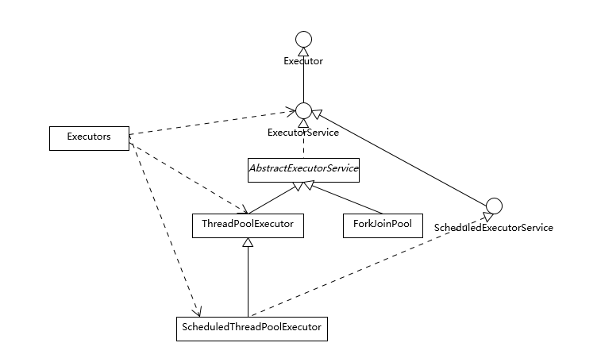
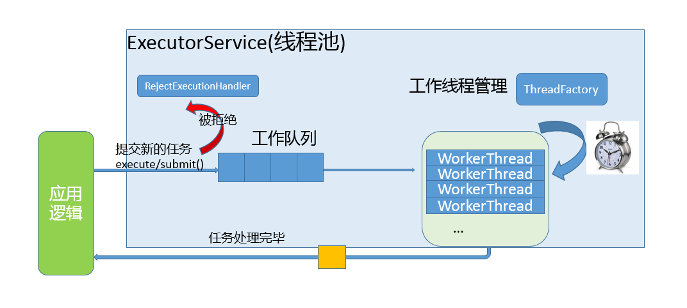
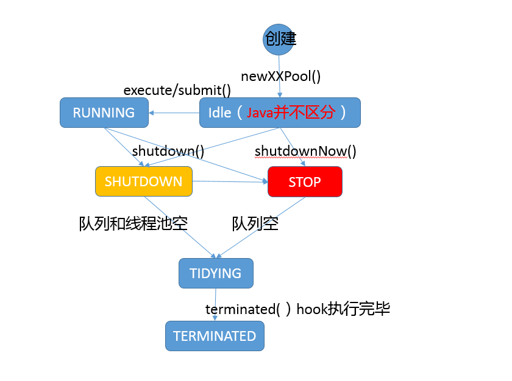

- 00 开篇词 以面试题为切入点，有效提升你的Java内功.md
- 01 谈谈你对Java平台的理解？.md
- 02 Exception和Error有什么区别？.md
- 03 谈谈final、finally、 finalize有什么不同？.md
- 04 强引用、软引用、弱引用、幻象引用有什么区别？.md
- 05 String、StringBuffer、StringBuilder有什么区别？.md
- 06 动态代理是基于什么原理？.md
- 07 int和Integer有什么区别？.md
- 08 对比Vector、ArrayList、LinkedList有何区别？.md
- 09 对比Hashtable、HashMap、TreeMap有什么不同？.md
- 10 如何保证集合是线程安全的_ ConcurrentHashMap如何实现高效地线程安全？.md
- 11 Java提供了哪些IO方式？ NIO如何实现多路复用？.md
- 12 Java有几种文件拷贝方式？哪一种最高效？.md
- 13 谈谈接口和抽象类有什么区别？.md
- 14 谈谈你知道的设计模式？.md
- 15 synchronized和ReentrantLock有什么区别呢？.md
- 16 synchronized底层如何实现？什么是锁的升级、降级？.md
- 17 一个线程两次调用start()方法会出现什么情况？.md
- 18 什么情况下Java程序会产生死锁？如何定位、修复？.md
- 19 Java并发包提供了哪些并发工具类？.md
- 20 并发包中的ConcurrentLinkedQueue和LinkedBlockingQueue有什么区别？.md
- 21 Java并发类库提供的线程池有哪几种？ 分别有什么特点？.md
- 22 AtomicInteger底层实现原理是什么？如何在自己的产品代码中应用CAS操作？.md
- 23 请介绍类加载过程，什么是双亲委派模型？.md
- 24 有哪些方法可以在运行时动态生成一个Java类？.md
- 25 谈谈JVM内存区域的划分，哪些区域可能发生OutOfMemoryError_.md
- 26 如何监控和诊断JVM堆内和堆外内存使用？.md
- 27 Java常见的垃圾收集器有哪些？.md
- 28 谈谈你的GC调优思路_.md
- 29 Java内存模型中的happen-before是什么？.md
- 30 Java程序运行在Docker等容器环境有哪些新问题？.md
- 31 你了解Java应用开发中的注入攻击吗？.md
- 32 如何写出安全的Java代码？.md
- 33 后台服务出现明显“变慢”，谈谈你的诊断思路？.md
- 34 有人说“Lambda能让Java程序慢30倍”，你怎么看？.md
- 35 JVM优化Java代码时都做了什么？.md
- 36 谈谈MySQL支持的事务隔离级别，以及悲观锁和乐观锁的原理和应用场景？.md
- 37 谈谈Spring Bean的生命周期和作用域？.md
- 38 对比Java标准NIO类库，你知道Netty是如何实现更高性能的吗？.md
- 39 谈谈常用的分布式ID的设计方案？Snowflake是否受冬令时切换影响？.md
- 周末福利 谈谈我对Java学习和面试的看法.md
- 结束语 技术没有终点.md
21 Java并发类库提供的线程池有哪几种？ 分别有什么特点？
我在[专栏第17讲]中介绍过线程是不能够重复启动的，创建或销毁线程存在一定的开销，所以利用线程池技术来提高系统资源利用效率，并简化线程管理，已经是非常成熟的选择。
今天我要问你的问题是，Java并发类库提供的线程池有哪几种？ 分别有什么特点？
典型回答
通常开发者都是利用Executors提供的通用线程池创建方法，去创建不同配置的线程池，主要区别在于不同的ExecutorService类型或者不同的初始参数。
Executors目前提供了5种不同的线程池创建配置：
-
newCachedThreadPool()，它是一种用来处理大量短时间工作任务的线程池，具有几个鲜明特点：它会试图缓存线程并重用，当无缓存线程可用时，就会创建新的工作线程；如果线程闲置的时间超过60秒，则被终止并移出缓存；长时间闲置时，这种线程池，不会消耗什么资源。其内部使用SynchronousQueue作为工作队列。
-
newFixedThreadPool(int nThreads)，重用指定数目（nThreads）的线程，其背后使用的是无界的工作队列，任何时候最多有nThreads个工作线程是活动的。这意味着，如果任务数量超过了活动队列数目，将在工作队列中等待空闲线程出现；如果有工作线程退出，将会有新的工作线程被创建，以补足指定的数目nThreads。
-
newSingleThreadExecutor()，它的特点在于工作线程数目被限制为1，操作一个无界的工作队列，所以它保证了所有任务的都是被顺序执行，最多会有一个任务处于活动状态，并且不允许使用者改动线程池实例，因此可以避免其改变线程数目。
-
newSingleThreadScheduledExecutor()和newScheduledThreadPool(int corePoolSize)，创建的是个ScheduledExecutorService，可以进行定时或周期性的工作调度，区别在于单一工作线程还是多个工作线程。
-
newWorkStealingPool(int parallelism)，这是一个经常被人忽略的线程池，Java 8才加入这个创建方法，其内部会构建ForkJoinPool，利用Work-Stealing算法，并行地处理任务，不保证处理顺序。
考点分析
Java并发包中的Executor框架无疑是并发编程中的重点，今天的题目考察的是对几种标准线程池的了解，我提供的是一个针对最常见的应用方式的回答。
在大多数应用场景下，使用Executors提供的5个静态工厂方法就足够了，但是仍然可能需要直接利用ThreadPoolExecutor等构造函数创建，这就要求你对线程构造方式有进一步的了解，你需要明白线程池的设计和结构。
另外，线程池这个定义就是个容易让人误解的术语，因为ExecutorService除了通常意义上“池”的功能，还提供了更全面的线程管理、任务提交等方法。
Executor框架可不仅仅是线程池，我觉得至少下面几点值得深入学习：
-
掌握Executor框架的主要内容，至少要了解组成与职责，掌握基本开发用例中的使用。
-
对线程池和相关并发工具类型的理解，甚至是源码层面的掌握。
-
实践中有哪些常见问题，基本的诊断思路是怎样的。
-
如何根据自身应用特点合理使用线程池。
知识扩展
首先，我们来看看Executor框架的基本组成，请参考下面的类图。

我们从整体上把握一下各个类型的主要设计目的：
- Executor是一个基础的接口，其初衷是将任务提交和任务执行细节解耦，这一点可以体会其定义的唯一方法。
void execute(Runnable command);
Executor的设计是源于Java早期线程API使用的教训，开发者在实现应用逻辑时，被太多线程创建、调度等不相关细节所打扰。就像我们进行HTTP通信，如果还需要自己操作TCP握手，开发效率低下，质量也难以保证。
- ExecutorService则更加完善，不仅提供service的管理功能，比如shutdown等方法，也提供了更加全面的提交任务机制，如返回Future而不是void的submit方法。
<T> Future<T> submit(Callable<T> task);
注意，这个例子输入的可是Callable，它解决了Runnable无法返回结果的困扰。
-
Java标准类库提供了几种基础实现，比如ThreadPoolExecutor、ScheduledThreadPoolExecutor、ForkJoinPool。这些线程池的设计特点在于其高度的可调节性和灵活性，以尽量满足复杂多变的实际应用场景，我会进一步分析其构建部分的源码，剖析这种灵活性的源头。
-
Executors则从简化使用的角度，为我们提供了各种方便的静态工厂方法。
下面我就从源码角度，分析线程池的设计与实现，我将主要围绕最基础的ThreadPoolExecutor源码。ScheduledThreadPoolExecutor是ThreadPoolExecutor的扩展，主要是增加了调度逻辑，如想深入了解，你可以参考相关教程。而ForkJoinPool则是为ForkJoinTask定制的线程池，与通常意义的线程池有所不同。
这部分内容比较晦涩，罗列概念也不利于你去理解，所以我会配合一些示意图来说明。在现实应用中，理解应用与线程池的交互和线程池的内部工作过程，你可以参考下图。

简单理解一下：
- 工作队列负责存储用户提交的各个任务，这个工作队列，可以是容量为0的SynchronousQueue（使用newCachedThreadPool），也可以是像固定大小线程池（newFixedThreadPool）那样使用LinkedBlockingQueue。
private final BlockingQueue<Runnable> workQueue;
- 内部的“线程池”，这是指保持工作线程的集合，线程池需要在运行过程中管理线程创建、销毁。例如，对于带缓存的线程池，当任务压力较大时，线程池会创建新的工作线程；当业务压力退去，线程池会在闲置一段时间（默认60秒）后结束线程。
private final HashSet<Worker> workers = new HashSet<>();
线程池的工作线程被抽象为静态内部类Worker，基于AQS实现。
-
ThreadFactory提供上面所需要的创建线程逻辑。
-
如果任务提交时被拒绝，比如线程池已经处于SHUTDOWN状态，需要为其提供处理逻辑，Java标准库提供了类似ThreadPoolExecutor.AbortPolicy等默认实现，也可以按照实际需求自定义。
从上面的分析，就可以看出线程池的几个基本组成部分，一起都体现在线程池的构造函数中，从字面我们就可以大概猜测到其用意：
-
corePoolSize，所谓的核心线程数，可以大致理解为长期驻留的线程数目（除非设置了allowCoreThreadTimeOut）。对于不同的线程池，这个值可能会有很大区别，比如newFixedThreadPool会将其设置为nThreads，而对于newCachedThreadPool则是为0。
-
maximumPoolSize，顾名思义，就是线程不够时能够创建的最大线程数。同样进行对比，对于newFixedThreadPool，当然就是nThreads，因为其要求是固定大小，而newCachedThreadPool则是Integer.MAX_VALUE。
-
keepAliveTime和TimeUnit，这两个参数指定了额外的线程能够闲置多久，显然有些线程池不需要它。
-
workQueue，工作队列，必须是BlockingQueue。
通过配置不同的参数，我们就可以创建出行为大相径庭的线程池，这就是线程池高度灵活性的基础。
public ThreadPoolExecutor(int corePoolSize,
int maximumPoolSize,
long keepAliveTime,
TimeUnit unit,
BlockingQueue<Runnable> workQueue,
ThreadFactory threadFactory,
RejectedExecutionHandler handler)
进一步分析，线程池既然有生命周期，它的状态是如何表征的呢？
这里有一个非常有意思的设计，ctl变量被赋予了双重角色，通过高低位的不同，既表示线程池状态，又表示工作线程数目，这是一个典型的高效优化。试想，实际系统中，虽然我们可以指定线程极限为Integer.MAX_VALUE，但是因为资源限制，这只是个理论值，所以完全可以将空闲位赋予其他意义。
private final AtomicInteger ctl = new AtomicInteger(ctlOf(RUNNING, 0));
// 真正决定了工作线程数的理论上限
private static final int COUNT_BITS = Integer.SIZE - 3;
private static final int COUNT_MASK = (1 << COUNT_BITS) - 1;
// 线程池状态，存储在数字的高位
private static final int RUNNING = -1 << COUNT_BITS;
…
// Packing and unpacking ctl
private static int runStateOf(int c) { return c & ~COUNT_MASK; }
private static int workerCountOf(int c) { return c & COUNT_MASK; }
private static int ctlOf(int rs, int wc) { return rs | wc; }
为了让你能对线程生命周期有个更加清晰的印象，我这里画了一个简单的状态流转图，对线程池的可能状态和其内部方法之间进行了对应，如果有不理解的方法，请参考Javadoc。注意，实际Java代码中并不存在所谓Idle状态，我添加它仅仅是便于理解。

前面都是对线程池属性和构建等方面的分析，下面我选择典型的execute方法，来看看其是如何工作的，具体逻辑请参考我添加的注释，配合代码更加容易理解。
public void execute(Runnable command) {
…
int c = ctl.get();
// 检查工作线程数目，低于corePoolSize则添加Worker
if (workerCountOf(c) < corePoolSize) {
if (addWorker(command, true))
return;
c = ctl.get();
}
// isRunning就是检查线程池是否被shutdown
// 工作队列可能是有界的，offer是比较友好的入队方式
if (isRunning(c) && workQueue.offer(command)) {
int recheck = ctl.get();
// 再次进行防御性检查
if (! isRunning(recheck) && remove(command))
reject(command);
else if (workerCountOf(recheck) == 0)
addWorker(null, false);
}
// 尝试添加一个worker，如果失败意味着已经饱和或者被shutdown了
else if (!addWorker(command, false))
reject(command);
}
线程池实践
线程池虽然为提供了非常强大、方便的功能，但是也不是银弹，使用不当同样会导致问题。我这里介绍些典型情况，经过前面的分析，很多方面可以自然的推导出来。
-
避免任务堆积。前面我说过newFixedThreadPool是创建指定数目的线程，但是其工作队列是无界的，如果工作线程数目太少，导致处理跟不上入队的速度，这就很有可能占用大量系统内存，甚至是出现OOM。诊断时，你可以使用jmap之类的工具，查看是否有大量的任务对象入队。
-
避免过度扩展线程。我们通常在处理大量短时任务时，使用缓存的线程池，比如在最新的HTTP/2 client API中，目前的默认实现就是如此。我们在创建线程池的时候，并不能准确预计任务压力有多大、数据特征是什么样子（大部分请求是1K 、100K还是1M以上？），所以很难明确设定一个线程数目。
-
另外，如果线程数目不断增长（可以使用jstack等工具检查），也需要警惕另外一种可能性，就是线程泄漏，这种情况往往是因为任务逻辑有问题，导致工作线程迟迟不能被释放。建议你排查下线程栈，很有可能多个线程都是卡在近似的代码处。
-
避免死锁等同步问题，对于死锁的场景和排查，你可以复习[专栏第18讲]。
-
尽量避免在使用线程池时操作ThreadLocal，同样是[专栏第17讲]已经分析过的，通过今天的线程池学习，应该更能理解其原因，工作线程的生命周期通常都会超过任务的生命周期。
线程池大小的选择策略
上面我已经介绍过，线程池大小不合适，太多或太少，都会导致麻烦，所以我们需要去考虑一个合适的线程池大小。虽然不能完全确定，但是有一些相对普适的规则和思路。
-
如果我们的任务主要是进行计算，那么就意味着CPU的处理能力是稀缺的资源，我们能够通过大量增加线程数提高计算能力吗？往往是不能的，如果线程太多，反倒可能导致大量的上下文切换开销。所以，这种情况下，通常建议按照CPU核的数目N或者N+1。
-
如果是需要较多等待的任务，例如I/O操作比较多，可以参考Brain Goetz推荐的计算方法：
线程数 = CPU核数 × 目标CPU利用率 ×（1 + 平均等待时间/平均工作时间）
这些时间并不能精准预计，需要根据采样或者概要分析等方式进行计算，然后在实际中验证和调整。
- 上面是仅仅考虑了CPU等限制，实际还可能受各种系统资源限制影响，例如我最近就在Mac OS X上遇到了大负载时ephemeral端口受限的情况。当然，我是通过扩大可用端口范围解决的，如果我们不能调整资源的容量，那么就只能限制工作线程的数目了。这里的资源可以是文件句柄、内存等。
另外，在实际工作中，不要把解决问题的思路全部指望到调整线程池上，很多时候架构上的改变更能解决问题，比如利用背压机制的Reactive Stream、合理的拆分等。
今天，我从Java创建的几种线程池开始，对Executor框架的主要组成、线程池结构与生命周期等方面进行了讲解和分析，希望对你有所帮助。
一课一练
关于今天我们讨论的题目你做到心中有数了吗？今天的思考题是从逻辑上理解，线程池创建和生命周期。请谈一谈，如果利用newSingleThreadExecutor()创建一个线程池，corePoolSize、maxPoolSize等都是什么数值？ThreadFactory可能在线程池生命周期中被使用多少次？怎么验证自己的判断？
请你在留言区写写你对这个问题的思考，我会选出经过认真思考的留言，送给你一份学习奖励礼券，欢迎你与我一起讨论。
你的朋友是不是也在准备面试呢？你可以“请朋友读”，把今天的题目分享给好友，或许你能帮到他。
© 2019 - 2023 Liangliang Lee. Powered by Vert.x and hexo-theme-book.